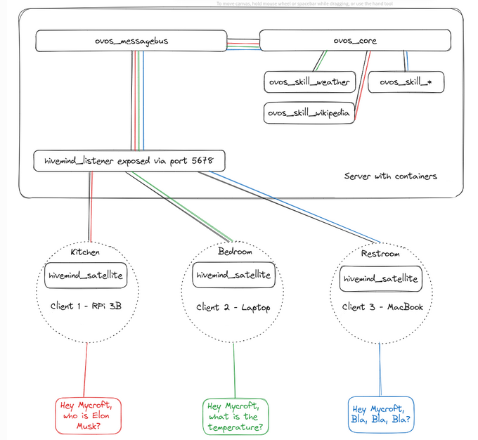

Remote Agents with OpenVoiceOS
While OpenVoiceOS is designed primarily for local-first usage, more advanced deployments—like hosting agents in the cloud, connecting multiple voice satellites, or enabling multi-user access through a web frontend—are made possible via the HiveMind companion project.
HiveMind Server
HiveMind is a distributed voice assistant framework that allows you to expose AI Agents (either full ovos-core installs or just individual personas) over a secure protocol.
💡 Unlike the lightweight
persona-server, HiveMind is designed for trusted, networked setups.
Key Features:
- Secure Access: Communicates over the HiveMind protocol, which supports authentication, encryption and granular permissions — safe for exposing OVOS to remote clients or satellites.
- Agent Plugins: Agent plugins integrate the HiveMind protocol with various frameworks, including OpenVoiceOS. Keep your existing infrastructure even when you totally replaces the brains!
- Multi-User Ready: Great for use in cloud hosting, web portals, or enterprise environments where access control is critical.
- Composable: Let local personas delegate questions to a smarter remote OVOS instance.

Typical Use-cases:
- 🏡 Running OpenVoiceOS on a powerful server or in the cloud.
- 🛰️ Connecting lightweight devices (satellites).
- 📱 Remote access to OpenVoiceOS.
- 🧑🤝🧑 Serving multiple users or applications concurrently.
Check out the HiveMind documentation for more info
HiveMind Personas
The hivemind-persona-agent-plugin project allows you to expose a single persona—not the full OVOS stack—through hivemind
This enables you to deploy AI agents for external use without needing a full OVOS assistant.
Why Use It?
- Minimal attack surface (persona only, no full assistant features).
- Can be queried remotely using the HiveMind protocol.
💡 This is not the same as
persona-server.hivemind-persona-agent-pluginuses a secure protocol (HiveMind), whileovos-persona-serveruses insecure HTTP.
Server Configuration
in your hivemind config file ~/.config/hivemind-core/server.json
{
"agent_protocol": {
"module": "hivemind-persona-agent-plugin",
"hivemind-persona-agent-plugin": {
"persona": {
"name": "Llama",
"solvers": [
"ovos-solver-openai-plugin"
],
"ovos-solver-openai-plugin": {
"api_url": "https://llama.smartgic.io/v1",
"key": "sk-xxxx",
"persona": "helpful, creative, clever, and very friendly."
}
}
}
}
}
HiveMind as a Solver Plugin
Want your local assistant to ask a remote one when it's stuck? You can!
The hivemind-bus-client can function as a solver plugin, allowing you to:
- 🦾 Delegate processing to a more powerful/secure server for specific tasks.
- 🌍 Handle outages: Handle intermitent local agent failures from other solver plugins in your persona definition
- 🤝 Use remote hivemind agents in a collaborative AI / MoS (mixture-of-solvers) setup.
🤖 “When in doubt, ask a smarter OVOS.”
For usage with persona, use "ovos-solver-hivemind-plugin" for the solver id
{
"name": "HiveMind Agent",
"solvers": [
"ovos-solver-hivemind-plugin"
],
"ovos-solver-hivemind-plugin": {"autoconnect": true}
}
You can also use it in your own python projects
from ovos_hivemind_solver import HiveMindSolver
bot = HiveMindSolver()
bot.connect() # connection info from identity file
print(bot.spoken_answer("what is the speed of light?"))
Chaining Components for Flexible Deployments
HiveMind and persona-server can be combined to bridge secure and insecure environments, depending on your needs:
- expose existing OpenAI/Ollama servers to hivemind satellites securely
- connect hivemind satellites directly to existing LLM apps (eg. ollama)
- expose a remote
hivemind-coreto local insecure ollama/openai endpoints- eg. to integrate hivemind into HomeAssistant
- expose a localhost
ovos-core/persona.jsonto local insecure ollama/openai endpoints- half-way compromise, does not expose the full messagebus and does not require hivemind
- easier to setup and configure
| Use Case | Tool | Secure? | API Type | Notes |
|---|---|---|---|---|
| Local interface + Persona | ovos-persona-server + persona.json |
❌ | OpenAI-compatible | Great for quick setups, not public exposure`,HTTP, no auth |
| Local interface + OpenVoiceOS | ovos-persona-server + ovos-solver-bus-plugin |
❌ | OpenAI-compatible | OpenVoiceOS bus must be exposed to ovos-persona-server,HTTP, no auth |
| Local interface + HiveMind Agent | ovos-persona-server + ovos-solver-hivemind-plugin |
❌ | OpenAI-compatible | Same as above, but for any remote hivemind agent,HTTP, no auth |
| Secure remote OpenVoiceOS agent | hivemind-core + hivemind-ovos-agent-plugin + ovos-core |
✅ | HiveMind protocol | Auth, encryption, granular permissions, HTTP or Websockets |
| Secure remote Persona agent | hivemind-core + hivemind-persona-agent-plugin + persona.json |
✅ | HiveMind protocol | Auth, encryption, granular permissions, HTTP or Websockets |
The first 3 examples allow us to integrate our Agents with HomeAssistant via the Ollama Integration
The last 2 examples allow us to integrate with HiveMind ecosystem and all the existing satellite implementations
⚠️ Related (Insecure) Alternatives
While useful for experimentation, some other persona access methods are not secure for remote use:
🦙 ovos-persona-server:
- ✅ Compatible with OpenAI/Ollama APIs.
- ❌ HTTP only, not encrypted or authenticated.
- ✅ Useful to expose personas to HomeAssistant, OpenWebUI, and similar local network tools.
🏠 HomeAssistant + ovos-persona-server:
- 🗣️ Can route HomeAssistant wyoming satellites to an OVOS persona.
- ❌ Uses Wyoming protocol, which lacks hivemind's security features.